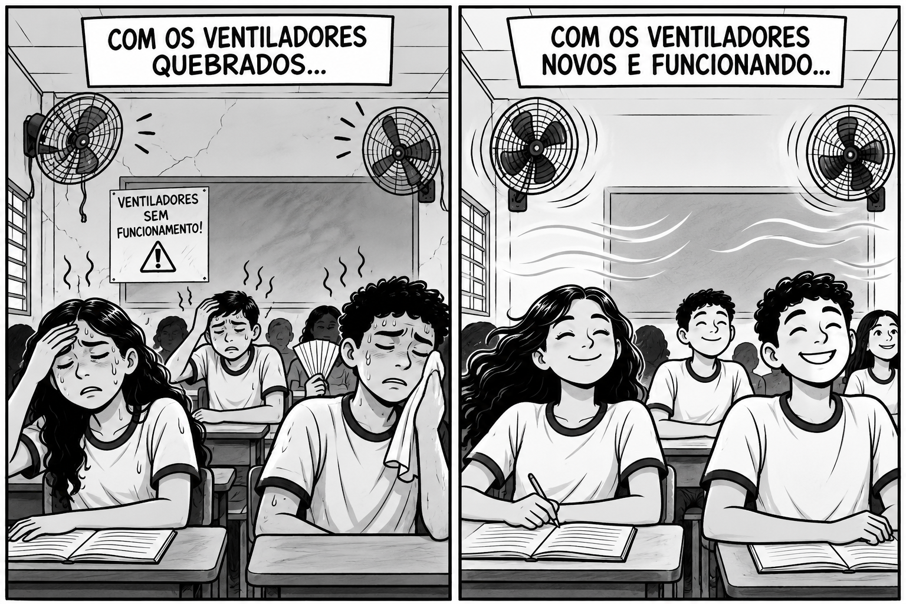
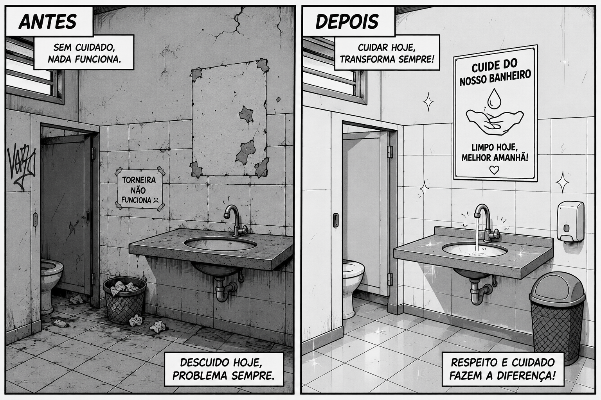
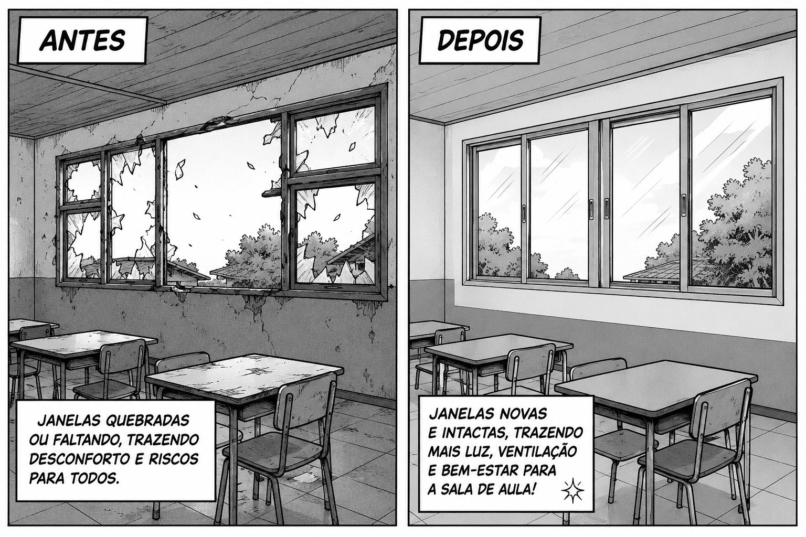
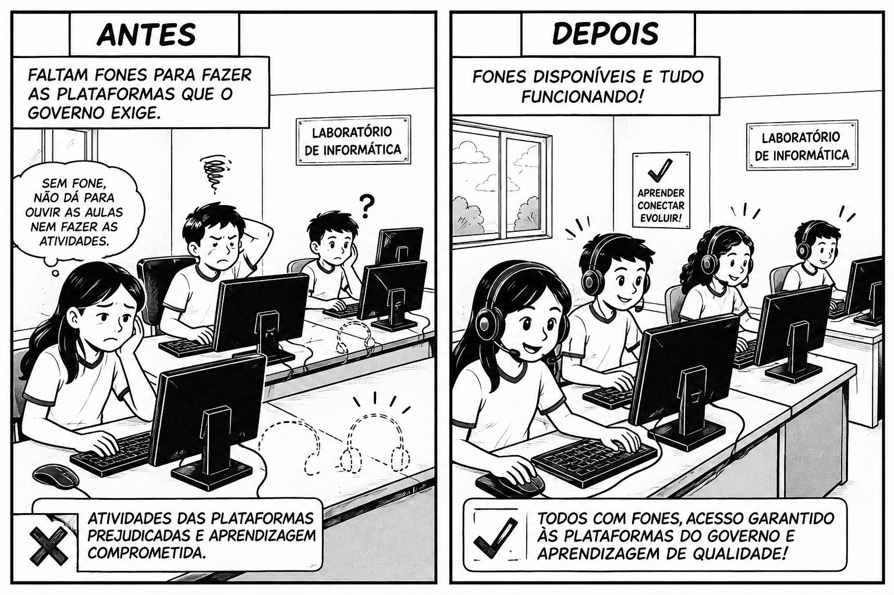
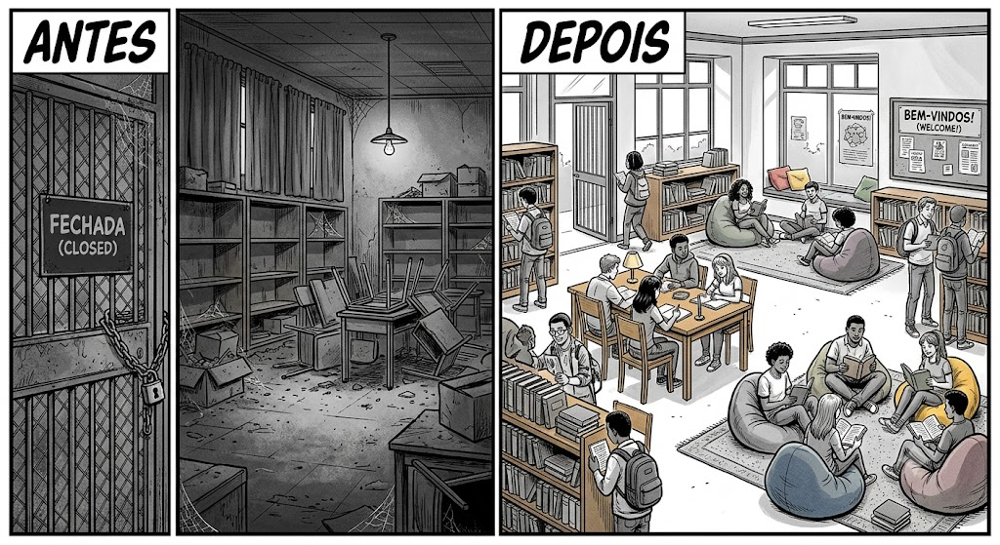
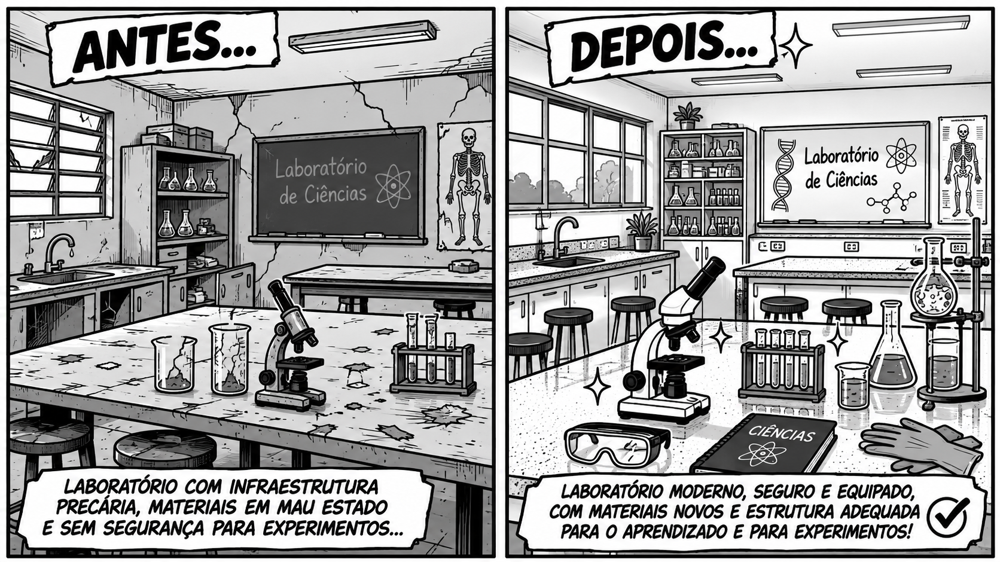
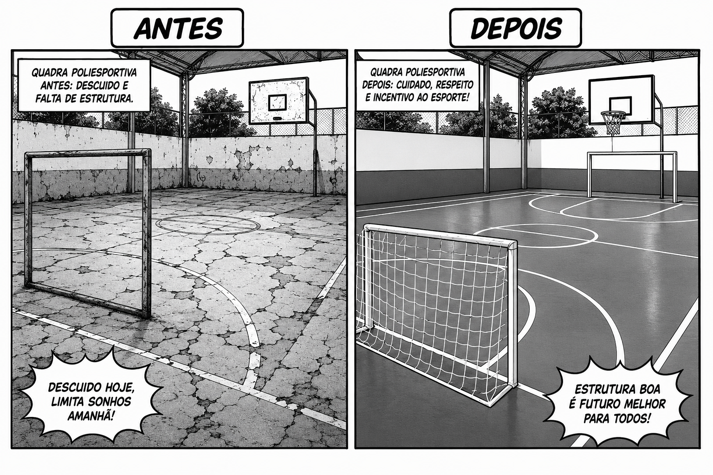

NOSSA ESCOLA NOSSO COMPROMISSO
O QUE NÓS PODEMOS FAZER PARA TORNAR NOSSA ESCOLA AINDA MELHOR?
O cuidado com o patrimônio da escola é responsabilidade 
de todos os estudantes e funcionários, os bens duráveis são importantes para o desenvolvimento
dos estudantes e gera um ambiente melhor para todos os envolvidos.
Cuidar da ventilação é garantir o conforto e o bem-estar de todos dentro da sala de aula.

Respeito e cuidado com o banheiro coletivo fazem toda diferença no dia a dia da escola.

Preservar as janelas e a estrututa traz mais luz, segurança e vida para o nosso aprendizado.

Cuidar dos equipamentos tecnológicos amplia nossa conexão com o conhecimento.

Manter a biblioteca aberta e organizada transforma a leitura em um hábito praseroso.

Zelar pelos materiais de experimento garante segurança e descobertas incríveis.

Manter a quadra limpa e preservada incentiva a prática de esportes e a união enre os alunos.